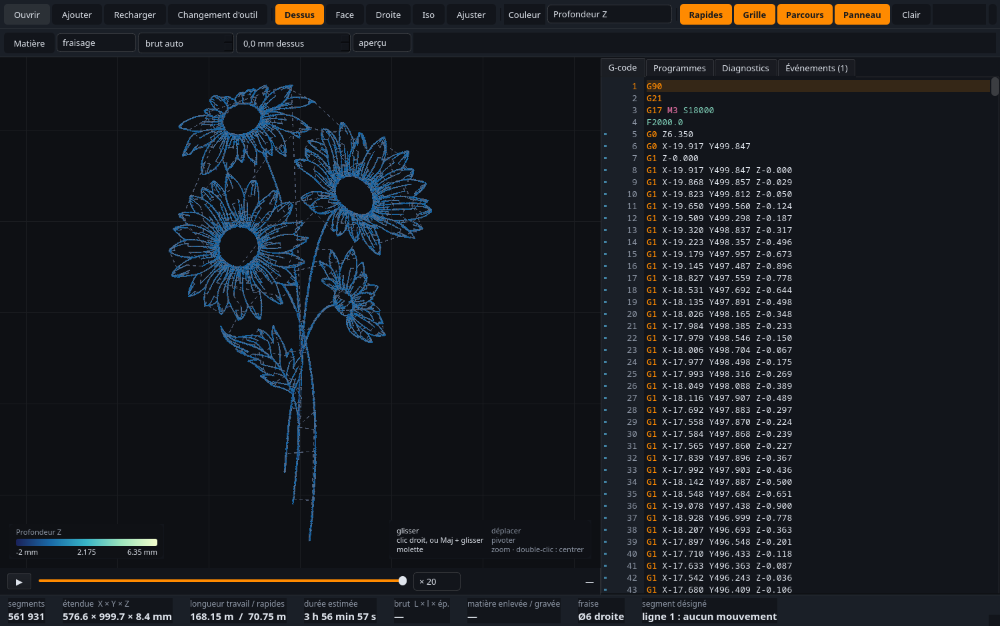
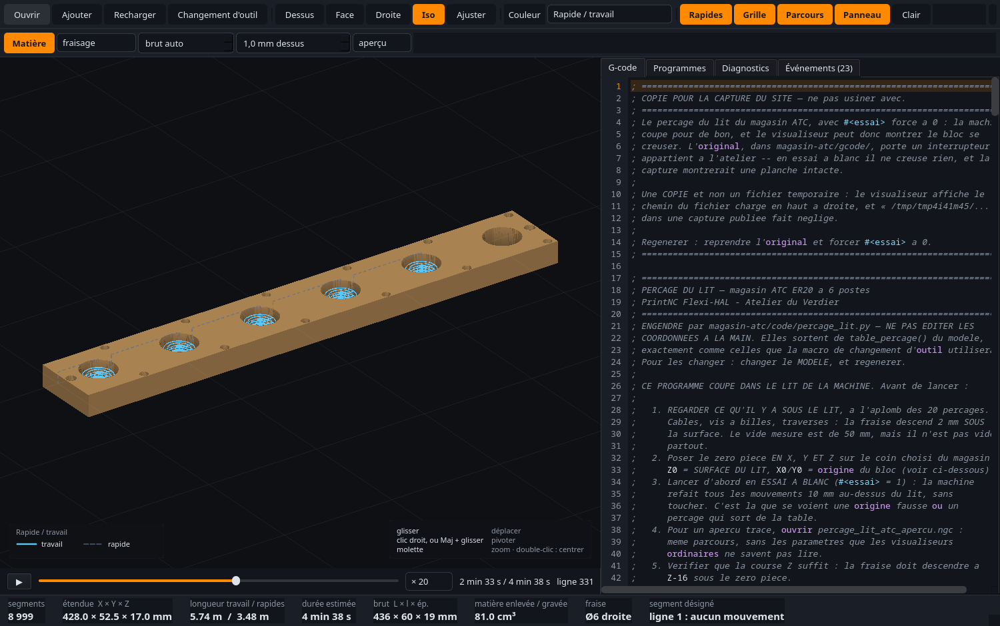
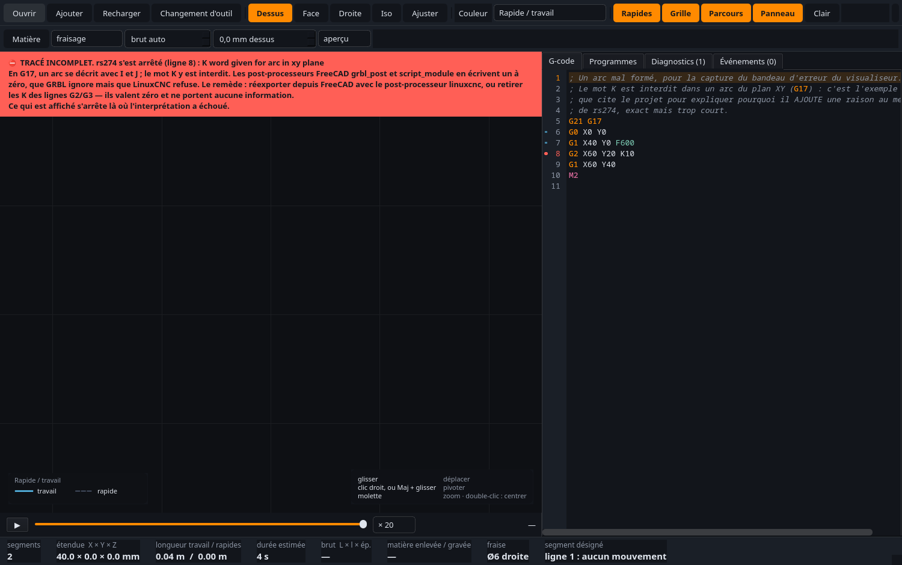
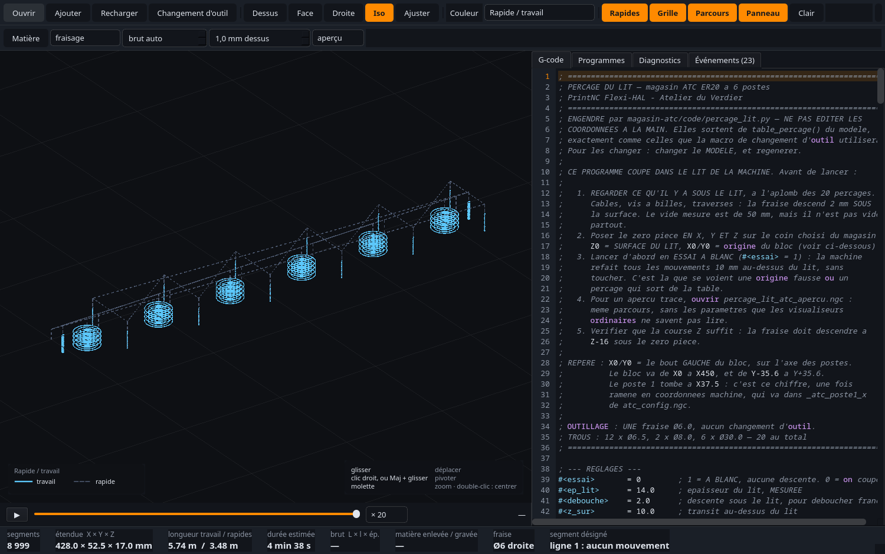

Cliquer n'importe où, ou Échap, pour fermer
Les visualiseurs G-code ordinaires n'implémentent pas le RS274NGC de LinuxCNC. Sur un fichier paramétré, ils n'échouent pas : ils inventent.
Un demi-million de segments à la fréquence de l'écran, le brut qui se creuse au fil du rejeu, et des erreurs qui s'expliquent au lieu de se taire.

Cliquer un segment ouvre sa ligne ; poser le curseur sur une ligne éclaire ses
segments. Y compris dans les sous-programmes : un mouvement engendré par
toolchange.ngc ouvre toolchange.ngc à la bonne ligne,
pas la ligne de même numéro du programme principal.
La tête avance selon la durée estimée. Sur une gravure, dix mille micro-traits pèsent un dixième du parcours mais la moitié du temps — un rejeu au numéro de segment donnerait une idée fausse du travail.


Les messages de rs274 sont exacts mais courts. « K word given for arc
in xy plane » n'apprend rien à qui veut juste tailler une pièce — alors le
visualiseur y ajoute le pourquoi et le remède : le mot K est interdit en G17,
certains post-processeurs FreeCAD en écrivent un à zéro que GRBL ignore mais que
LinuxCNC refuse, et il suffit de réexporter avec le bon post-processeur. Ce que dit
l'interprète n'est jamais effacé.
percage_lit_atc.ngc perce le lit de la machine. Il emploie des
paramètres #<nom>, des expressions [..] et des
O… IF — c'est ce qui permet de le lancer d'abord en essai à
blanc, dix millimètres au-dessus du lit, avant de couper pour de bon.
Chargé dans un visualiseur en ligne, il a produit quelques cercles au mauvais endroit. Pas une alerte, pas un avertissement : un dessin faux, présenté comme juste. Ces outils lisent un G-code de base et ignorent le reste. Sur un fichier ordinaire ça passe ; sur un fichier paramétré, ça invente.

#<essai>,
#<ep_lit> et #<debouche> — ce sont eux que les
visualiseurs ordinaires ne savent pas lire.
Ne pas écrire de parseur G-code. Écrire le sien, c'est refaire le même bug avec les mêmes angles morts. LinuxCNC livre l'interpréteur qui fait autorité ; ce programme l'appelle et se contente de dessiner ce qu'il répond.
Le fichier paramétré et son jumeau développé à la main — écrit à l'époque justement pour contourner les visualiseurs ordinaires — sont comparés segment par segment.
Le jumeau développé à la main n'a plus de raison d'être : c'est peut-être le meilleur résultat du projet.
Un greffon ajoute une icône à la barre de l'atelier CAM de FreeCAD. Il poste le Job courant et ouvre le résultat dans le visualiseur, en processus séparé. Le G-code n'est pas écrit sur le disque et le document n'est pas modifié.
FreeCAD a pourtant déjà son simulateur. Mais il lit
operations[i].Path.Commands — les objets Path internes. Il
montre donc ce que FreeCAD a l'intention de faire, jamais ce que le
post-processeur a écrit. Il est structurellement aveugle à un défaut de
post-traitement, et ces défauts existent : sur 167 fichiers de l'atelier,
49 portaient un mot K sur des arcs G17, émis par le
post-processeur. Le simulateur les montre parfaits ; l'interpréteur de LinuxCNC
les refuse.
Un ancien fichier de guitare, dont le Job visait encore GRBL. Le
post-processeur écrit K0.000 sur les 275 arcs du
programme — pas un seul non nul, donc pas un seul qui porte la moindre
information. GRBL les ignore, LinuxCNC s'arrête au premier. Résultat à
l'écran : 5 segments au lieu de 2 173, et un bandeau rouge qui nomme
la ligne et la raison. Le simulateur intégré, lui, l'aurait dessiné entier.
Le Job entier est rarement ce qu'on cherche : on cherche l'opération dont on doute. Le greffon demande donc lesquelles tracer, les cases suivant l'état du Job. Sur une rosace de 18 opérations, tout donne 2 103 lignes de G-code et la seule opération de contour en donne 111.
Le Job n'est pas modifié pour autant. La voie évidente — désactiver les opérations puis les réactiver — laisserait un Job amputé si quoi que ce soit s'interrompait entre les deux, et ce Job-là finirait un jour posté pour de vrai. Le greffon restreint plutôt ce que le post-processeur considère : cocher les 18 redonne le fichier entier à deux lignes près, l'horodatage.
Une opération que FreeCAD n'a pas su recalculer garde le parcours de son dernier calcul réussi. Le post-processeur le poste sans broncher, et le tracé sort complet, crédible, périmé. C'est le défaut d'origine de ce projet, refait à l'intérieur même de l'outil censé le débusquer. Le greffon nomme désormais l'opération fautive et laisse choisir.
Ce dernier chiffre est la raison d'être du contrôle. Une alarme qui se trompe s'apprend à ignorer, et cesse alors de servir le jour utile : le seuil a donc été choisi sur un relevé des 366 opérations des 87 Jobs de l'atelier. L'état « à recalculer » touche 57 fichiers sur 87 — inutilisable. L'état « en échec » sort à une opération sur 366, et c'était la bonne.
La partie technique, repliée : à dérouler seulement si le sujet intéresse.
Un noyau qui ne connaît ni Qt ni OpenGL et se teste sans écran, et une interface qui ne fait aucune géométrie.
LinuxCNC est en GPL-2.0. Importer son module Python serait une édition de liens et rendrait le dépôt dérivé. Un processus séparé qui échange du texte garde les deux indépendants — et le format canonique est stable et facile à lire.
-n 0
En mode « continuer », rs274 signale l'erreur, poursuit, et
sort avec le code 0. Le parcours est tronqué sans que rien ne le dise.
Le mode par défaut sort avec 1 : c'est la garantie contre l'échec silencieux,
et elle ne se brade pas.
.var jetable
Sans -v, rs274 écrit ses paramètres persistants dans
le fichier d'exemple de la configuration. Un G10 L2 dans un
fichier regardé en passant polluerait toutes les lectures suivantes.
Le lien entre le tracé et le code n'a rien coûté.
print_nc_line_number() de LinuxCNC relit le mot N du
texte source et le recopie dans la sortie canonique. En préfixant chaque ligne
d'une copie par son propre numéro, chaque segment porte son origine — aucune
analyse du G-code n'est nécessaire, et rien ne peut diverger.
Restait un manque : le mot N dit « ligne 42 », pas « ligne 42 de quel
fichier ». Chaque fichier reçoit donc sa tranche d'un million.
N a été vérifié, pas supposé.
La matière restante est décrite par une carte de hauteurs — une grille en X/Y, une altitude par case. C'est ce qu'il faut pour trois axes, où la matière se décrit entièrement par sa surface supérieure. Des voxels sauraient faire les contre-dépouilles, qu'une PrintNC ne fait pas, et coûteraient cent fois plus.
Le calcul ne parcourt pas les segments un par un — ce serait un appel numpy par segment, des dizaines de secondes sur un gros fichier. Il se ramène à une érosion en niveaux de gris :
paquerette2.ngc, et
3 ms par image pendant le rejeu.
La carte de hauteurs donne un volume. En face, FreeCAD construit le solide balayé par l'outil et le retire du brut en BRep exact. Aucun code commun : ni la représentation, ni l'algorithme, ni la bibliothèque.
Le chiffre attendu de tête pour le contour fermé était faux de 5 % : c'était la formule d'un chemin ouvert. Un test qui ne vérifie que ce qu'on avait déjà en tête n'aurait rien vu.
Aucun programme ne dit où est le bois : il dit où va l'outil. Le premier jet prenait le point le plus haut usiné — c'est-à-dire le début du plongeon, qui part de la hauteur de garde. Sur 37 fichiers de l'atelier, il posait le dessus à +2, +3 ou +10 mm quand la coupe commence à zéro : une peau de bois fantôme, un volume gonflé d'autant — 50,9 cm³ annoncés contre 33,5 réels — et dix-sept fausses alarmes du contrôle des rapides.
ARC_FEED reçoit (fin_z, fin_x) et non
(fin_x, fin_z). Un contrôle de centre ne voit rien : le test mesure donc le
balayage déroulé.
PySide6 accepte setUniformValue(emplacement, 0.5) et ne fait
rien : ni exception, ni erreur OpenGL. Tous les modes de coloration
affichaient le premier. Les scalaires tiennent maintenant dans un
vec4, et un test surveille.
Sans la limite centripète, découper un cercle plus fin ferait « ralentir » la
machine, et un G61 ferait durer un cercle une éternité. Le test
exige que la durée d'un cercle ne dépende pas de la finesse du découpage.
Une version de LinuxCNC packagée multiplie les décalages d'outil par 25,4, et aucun réglage d'unités n'y change rien. Le T100 de la PrintNC, décalage Y de 88,75 mm, ressortait à 2 254,25 mm — sans un mot. Le facteur est donc mesuré au lancement, sur un programme d'essai d'une ligne, puis compensé. La mesure rend 1 depuis, et la compensation reste : rien ne garantit la version du prochain poste.
Le panneau G-code est un vrai éditeur, et l'enregistrement est atomique : un fichier tronqué par une écriture interrompue ne se signale pas — il s'ouvre, s'interprète, se lance, et s'arrête au milieu du travail. Fins de ligne et saut final sont relevés sur les octets d'origine et reproduits : sur 306 fichiers de l'atelier, 4 sont en CRLF et 68 n'ont pas de saut final. Les réécrire « proprement » transformerait un chiffre modifié en un diff de cinq cents lignes, et ces fichiers sont sous git.
G5.2/G5.3 (NURBS) ne sont pas traçables —
rs274 n'écrit pas les points de contrôle. Le mouvement est omis et
signalé, jamais avalé.Sous LGPL-2.1, sur github.com/atelierduverdier/visualiseur-gcode — y compris la suite de douze modules, et le contrôle qui éprouve le contrat entre le greffon et les entrailles de FreeCAD.
Deux de ces modules lisent des fichiers qui ne sont pas dans le dépôt : le programme de perçage du lit de ma machine et son jumeau développé à la main, pièces à conviction du contrôle le plus important du projet. Sans eux, ils échouent en nommant le fichier manquant — jamais en silence.